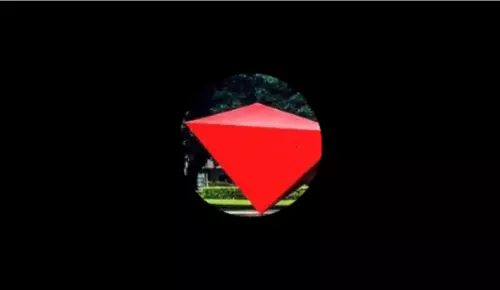
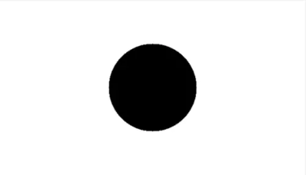
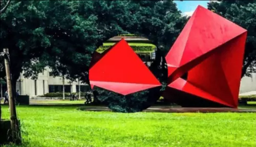

本系列將紀錄影像處理小白從 0 開始學習 Python x OpenCV 的過程
這是學校選修課的功課紀錄，同步發布於 該課程 Blogger
功課要求
撰寫一個程式將一張圖像的
(a)整張圖像
(b)中心內切圓區域
旋轉一個角度（逆時針旋轉 0 度至 359 度）：利用一個滑動條(trackbar)控制旋轉角度。
成果
 透過滑動滑桿調整整張圖片的旋轉角度
透過滑動滑桿調整整張圖片的旋轉角度
 透過滑桿調整內切圓半徑與旋轉角度
透過滑桿調整內切圓半徑與旋轉角度
開發環境
| OS | Editor | Language | OpenCV |
|---|---|---|---|
| Windows 10 | Visual Studio Code | Python 3.9.16 | OpenCV 4.5.4 |
做法
旋轉整張圖像
這個的想法非常簡單，取得特定圖像的旋轉矩陣後把整張圖片乘上旋轉矩陣後就好。
flowchart TD
A[建立視窗顯示圖片與 Trackbar] --> B[Trackbar 監測是否有被滑動]
B --> C[滑動時執行旋轉]
C --> D[將旋轉後的圖片顯示於視窗中]
D --> B
旋轉圖像
所以我寫了一個 Function 好讓 Trackbar 可以重複執行旋轉的動作：
1
2
3
4
5
6
7
8
9
10
11
def rotate_img(val):
global origin_img, result_img
(h, w, d) = origin_img.shape # 讀取圖片大小
center = (w // 2, h // 2) # 找到圖片中心
# 取得旋轉矩陣
M = cv2.getRotationMatrix2D(center, val, 1.0)
print(val)
result_img = cv2.warpAffine(origin_img, M, (w, h))
cv2.imshow("Rotate Image", result_img)
建立 Trackbar
至於 Trackbar 的建立也非常簡單：
利用 imshow 顯示目前的圖片，再使用 createTrackbar 在該視窗建立滑動條。
createTrackbar 的參數分別是 滑桿名稱 , 視窗名稱 , 最小值 , 最大值 , 滑動時要執行的函式
1
2
cv2.imshow("Rotate Image", result_img)
cv2.createTrackbar("degree", "Rotate Image", 0, 359, rotate_img)
如此一來就建立了一個這樣的視窗：
 利用 imshow 和 createTrackbar 產生的 GUI 視窗
利用 imshow 和 createTrackbar 產生的 GUI 視窗
旋轉中心圓形區域
切圓形實在不是那麼直觀，透過建立一個 Mask 作為遮罩，來協助我們裁切特定圖片區域。
流程圖如下：
flowchart TD
A[建立視窗與滑桿]
A --> B[旋轉角度滑桿滑動] --> D["將值存進 bar_degree 變數中"]
A --> C[裁切圓形半徑滑桿滑動] --> E["將值存進 bar_radius 變數中"]
D --> F["根據 bar_radius 建立一個圓形遮罩"]
E --> F
F --> G["利用 bitwise_and 裁切出圓形區域，並根據 bar_degree 旋轉該區域"]
G --> H[根據 bar_radius 再次建立圓形遮罩]
H --> I[這次使用 bitwise_not 裁切掉中心區域的圓形部分]
I --> J[使用 bitwise_or 將旋轉後也裁切好的圖片結合]
J --> K[顯示結果於視窗中]
旋轉中心圓區域
首先必須先找到中心圓區域做旋轉：
- 利用
np.zeros_like(origin_img)製作一個和原圖片相同尺寸的全黑圖片。（其中np為numpy） - 利用
cv2.circle(img, center, radius, color, thickness)在剛剛的全黑畫布上畫一個實心白色圓形，生成一個圓形遮罩img: 要用來畫圓的圖片center: 圓心座標 (X, Y)radius: 圓的半徑color: 圓的顏色 (B, G, R)thickness: 圓的框線粗細，以 px 為單位，設為 -1 會填滿整個圓
- 把圓形遮罩拿來和原圖
cv2.bitwise_and(src1, src2[, dst[, mask]])後，由於剛剛的圓形遮罩只有中心圓形部分有值（白色），所以進行 AND 後能得到原圖的中心圓形部分。src1,src2: inputdst: outputmask: 指定要使用src1和src2的哪些位置來做運算，是一個 8-bit 單通道 array- 關於參數中的
[]，那代表參數可以自行選擇要不要填，並非必要參數，可以參考 這篇文章

- 再來就能把這個圓形圖片丟到剛剛提到的旋轉函式裡了！

1
2
3
4
5
6
7
8
9
10
11
12
13
def crop_circle(radius):
global origin_img
(h, w, d) = origin_img.shape # 讀取圖片大小
center = (w // 2, h // 2)
# 產生 mask
mask = np.zeros_like(origin_img)
mask = cv2.circle(mask, center, radius, (255,255,255), -1)
# 取得圓形圖片
crop = cv2.bitwise_and(origin_img, mask)
return crop
結合旋轉後的圓到原圖上
再來就是將旋轉完的圓形貼回原圖，這裡一樣要用到圓形遮罩來實現。
- 像剛剛一樣畫一個黑底的白色圓形圖片
- 使用
cv2.bitwise_not(src[, dst[, mask]])將整個圖片的黑白翻轉，這樣就得到中心為黑色但四周為白色的遮罩。
 - 使用
cv2.bitwise_and(src1, src2[, dst[, mask]])擷取圖片外圍，並利用cv2.bitwise_or(src1, src2[, dst[, mask]])結合兩張圖片，產生最終結果。 
1
2
3
4
5
6
7
8
9
10
11
12
13
14
15
16
17
def combine_img(center_img, radius):
global origin_img
(h, w, d) = origin_img.shape # 讀取圖片大小
center = (w // 2, h // 2)
# 產生 mask
mask = np.zeros_like(origin_img)
mask = cv2.circle(mask, center, radius, (255,255,255), -1)
mask = cv2.bitwise_not(mask)
# 取得圓形圖片
crop = cv2.bitwise_and(origin_img, mask)
# 結合兩張圖片
combined_img = cv2.bitwise_or(center_img, crop)
return combined_img
總結
本篇利用 OpenCV 進行簡單的圖片旋轉與裁切，作為 OpenCV 和影像處理入門是非常友善的！
推薦想接觸影像處理領域的人嘗試。